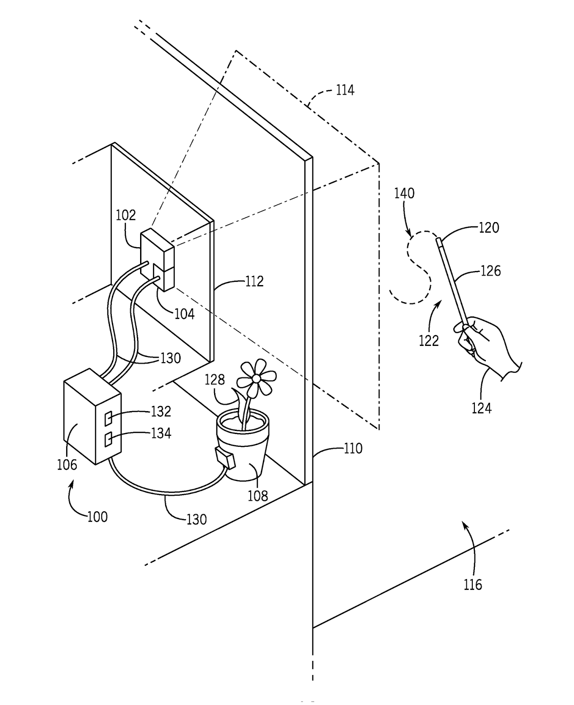
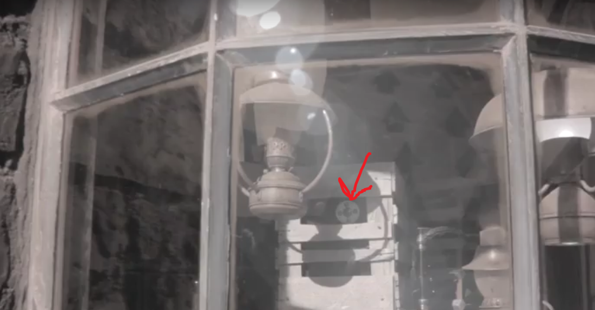

{kind=link}
Make an interactive Harry Potter wand out of literally anything.
What?
Harry Potter World inside of Universal Studios Hollywood/Orlando has 'magic' interactive displays. In order to interact with these displays you need to buy a special interactive wand.
Why?
The interactive wands cost a magical $55, but consist of nothing more than a magical plastic stick and magical retro-reflector. Why pay $55 when you could make your own wand that works half as well for 1/10 the cost!
Video
Filming by Cameramanjohn
How do the Wands Work?
The interactive wand patent by Universal City Studios Llc describes the wand as a passive device, meaning no electronics inside, that simply reflects light back to a sensor that tracks the wand's movement.
|  |
| FIG.1 from the patent |
{kind=link}
The actual setup consists of a near-infrared camera hidden inside of the animatronic display, with a ring of infrared LEDs pointing towards the user.
|  |
| IR camera and LEDs in Harry Potter World |
{kind=link}
The wand has a small retro-reflector on the tip which bounces some of the infrared light directly back to the camera. The camera sees a small glowing dot at the tip of the wand. As the glowing tip moves through the image captured by the camera, its motion is recorded and compared to the "correct" spell movement. When a correct spell movement is detected, the system activates an animatronic display.
| Plaques indicate the correct wand movement |
{kind=link}
Making your own wand
Making a functional wand really only depends on the retro-reflector you use, not what it's strapped to. Seriously, all you need to do is put a small (<3mm) retro-reflector on an object and it should work.
This blog post is kinda rushed, so I'm just going to describe what we tried and how well it worked.
Worked Best:
- 3mm Facial tracking dots (we did NOT try different size dots)
Did Work:
- Dollar store reflective tape with the edges curled up
- 3M reflective tape (a small 0.125 inch square)
Didn't Work:
- Metallic hemispheres
- IR LED (could try a pinhole next time)
Bought, but didn't try:
Results
This WORKS, but not as well as the real wands. You will get much better results once the sun starts setting, and we had trouble with the reflectors on bright surfaces (like Mr. Bones' head)
Thanks To:
www.LifePixel.com for converting a Canon Rebel T2i to near-infrared so we could see what the IR cameras see!
Hey, I tried 5mm facial tracking dot thinking that it would work better since it is bigger in diameter but it didn't. Did you try at Universal Studios Hollywood location?
ReplyDeleteDid the 5mm work?
DeleteI know this is years from when this was posted. I measured the actual dome tip of an interactive wand and it is 4mm in diameter.
DeleteWhat is that kazoo song at the beginning?
ReplyDeleteLooking at the “real” wands, the IR reflector is recessed into the tip of the wand. Maybe that’s part of the reason why it works better?
ReplyDeletethe works and of course the occasional poem when the mood strikes. Since I have nothing else... have a Random Photo. Sunset on The River Walk As always, my Flickr photostream is her... link
ReplyDeleteAre you sure that IR LED do not work? This guy did it. https://www.facebook.com/stayingdusty/posts/10155265482099759
ReplyDeleteNice Post! Keep Sharing. Intel Computer Stick
ReplyDeleteDoes using multiple facial tracking dot increase the precision?
ReplyDeleteThe video you guys made was lovely!
do you feel a larger dot would work as well? do you know what size the "dot" on those sold at the park are? photos seem to make them look larger that the 3mm you suggested (and which I purchased) Just wondering. . . can't wait to try out my wand when we go later this year
ReplyDeletenice
ReplyDeleteSweet because I got mine 5 years ago and was wondering ti I should bring it on this vacation.Didnt know if it was battery operated. Thank you so much!!
ReplyDeleteSo essentially this is Ron's wand?
ReplyDeleteI bought an interactive wand. If I remove the tip that alone should work if affixed to anything, even say a finger. Does this seem right?
ReplyDeletedid it work?
Delete